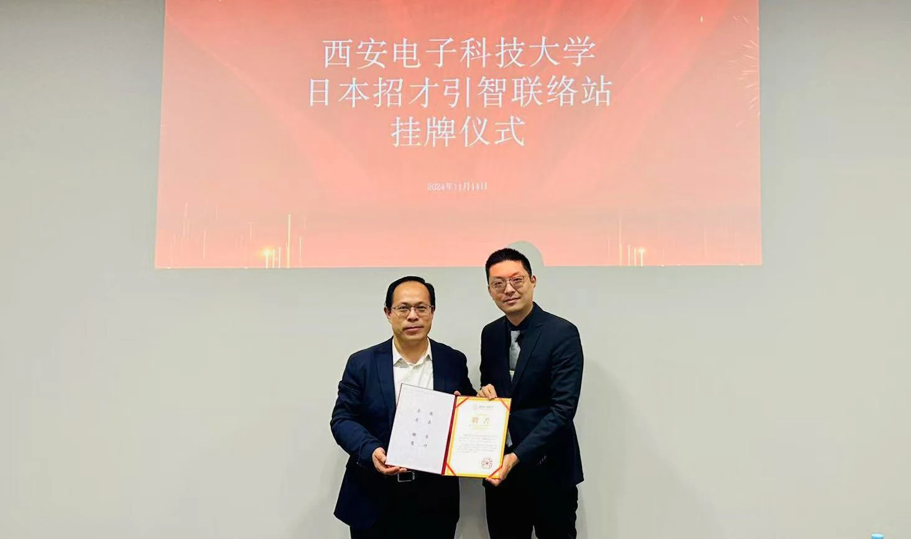
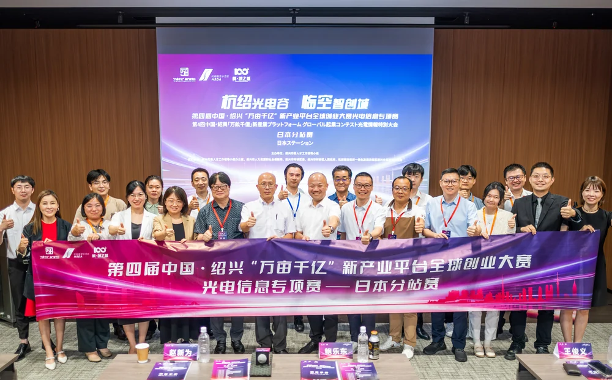
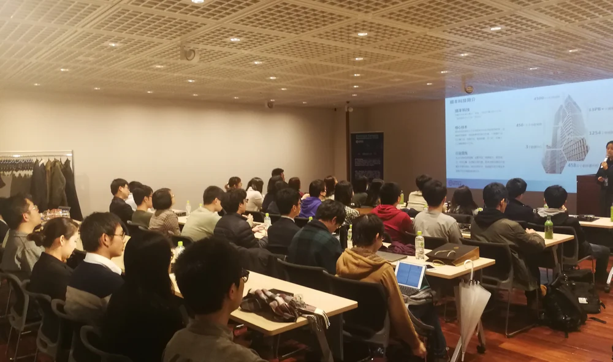
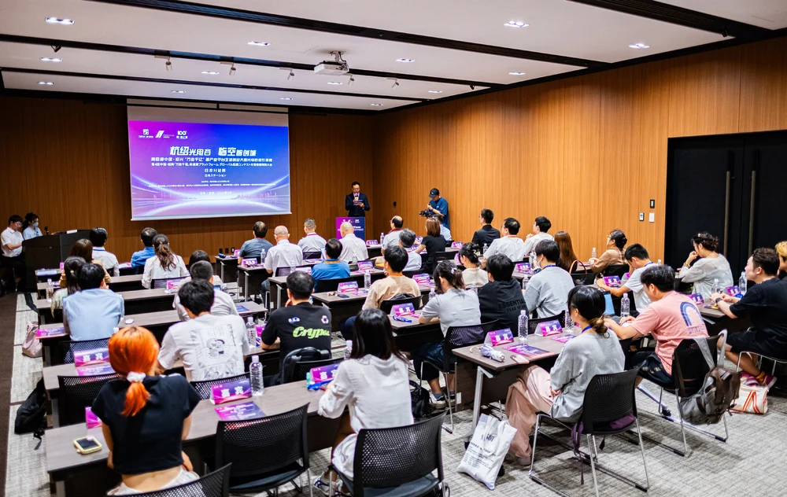

交流考察
围绕政府交流、产业参访与学术合作，匹配参访单位，组织专业对话。
青才聚力，汇智共济
中日青年人才发展协会
以青年为起点，连接中日之间的
人才、科技与文化。
中日青年人才发展协会，以促进中日青年沟通协作、推动两国青年人才科技与文化交流为核心使命。协会理事会与核心成员由来自中日两国高校的青年学者与专业人才组成。
我们陪伴青年成长，促进人才互通，也为政府、企业、高校及科研机构搭建务实、持续的合作路径。
据协会宣传资料整理，展示资料所载累计成果。
青年Youth
成长有机会，生活有支持。让身在海外的青年在交流中获得归属，也在相互理解中拓展视野。
节日联谊、文化体验与兴趣交流，营造相互支持的青年社群。
围绕科研、职业规划与在日生活，提供政策解读、专题交流与日常支持。
人才Talent
把人才的期待与发展的需要连接起来。从认识机会，到建立信任，再到面对面的交流。
围绕人才政策宣传、人才推荐、合作对接与招才引智活动，为在日人才和国内用人单位建立常态化联络。
通过公益就职活动、实用技能讲座与岗位信息，帮助青年提升简历、面试等求职能力，了解实习与就业机会。
协助政企校机构开展在日招聘宣讲，统筹候选人邀约、交流安排、会场支持与现场协调，促进双向了解。

发展Development
连接中日资源，回应实际需求。
从一次走访、一场对话出发，
让合作拥有清晰的下一步。
跨越山海，
携手向前。
围绕政府交流、产业参访与学术合作，匹配参访单位，组织专业对话。
结合专业背景与发展目标，设计主题研学路线，开展行业参访与技能培训。
围绕学术、产业与公共交流议题，统筹嘉宾邀请、翻译及会务执行。
开展日本赛区推广、项目招募、辅导遴选与资源对接，支持青年创新。
交流实践



活动影像选自途洋文化宣传册，以图片与概括性标题呈现服务实践。
了解目标与合作方向
匹配资源与实施安排
中日团队协同推进
回顾成果与后续合作
与青发协同行
关于成长，关于人才，关于新的合作。
让我们从一次真诚的沟通开始。